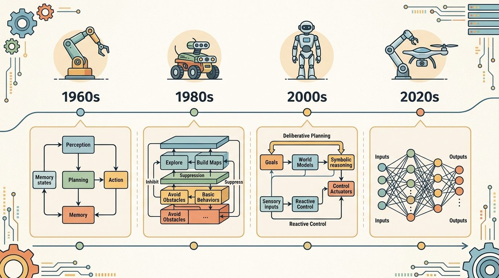

"A foundation model is a powerful component, not a complete robot. The stack still needs every layer the model does not replace."
A Careful Control Loop

This section assumes familiarity with the agent loop and layered control introduced in sections 3.1 and 3.2, and with the dual-system framing from section 3.6, which explains why LLMs naturally occupy the slow-reasoning role. The interface-risk column in the comparison table here is extended in section 3.8, which catalogs how each architecture fails when its interface contract is violated. For production-depth treatment, section 31.5 covers LLMs as task decomposers, section 33.2 examines the SayCan pattern of keeping language planning separate from execution, and sections 34.2 and 34.5 trace how VLAs collapse or separate those interfaces in RT-2 and its successors.
A robot arm reaches for a mug, but the vision model sees only pixels and the language model knows only text. Something must bridge them, and right now three overlapping model families are competing to do exactly that: LLMs that plan in words, VLMs that reason over images and text, and VLAs that map pixels directly to motor commands. These slots line up with the dual-system (System 1 / System 2) split introduced earlier, where slow deliberation and fast reaction occupy different layers. Choosing the wrong one for the wrong layer stalls entire products. Each model family maps to a precise interface in the control stack; a side-by-side comparison table makes the tradeoffs explicit, and a decision heuristic closes the section for applying the framework to any new architecture.
Pick the wrong foundation model for a layer and you can spend 50,000 demonstrations training a robot to do what 300 would have taught the right architecture: the same "see the object, then move the gripper" gap costs almost nothing when one model owns it and balloons when a silent handoff sits in the middle. By the end of this section you should be able to assign any foundation model to the correct interface slot in a control stack and justify that choice from input modality, output contract, and latency budget. First we define the object of study, then we connect it to the agent loop (the perception-decision-action cycle introduced in section 3.1, in which each new observation depends on the last action taken), then we test it with a compact implementation. Figure 3.7 captures that cycle as the evidence, decision, consequence pattern that the three model families plug into at different points.
The key question in Where LLMs, VLMs, and VLAs sit in the stack is practical: what must the agent know, what can it observe, what action is available, and what evidence shows that the action worked under the stated conditions?
A representation earns its place when it changes the measurable action interface. In where llms, vlms, and vlas sit in the stack, the reader should keep asking which decision becomes easier, safer, or more reliable.
For Where LLMs, VLMs, and VLAs sit in the stack, the practical design rule is to make the interface inspectable before optimization begins: inputs, outputs, units, latency, bounds, and failure labels should all be visible in the saved artifact.
Once the interface is inspectable, the next question is which model family belongs at each interface, and the answer is rarely the most advanced one. LLMs, VLMs, and VLAs are not interchangeable upgrades. They sit at different interfaces in the stack, as Figure 3.7A illustrates. An LLM maps language context to language, plans, tool calls, or symbolic instructions. A VLM maps images and language to grounded descriptions, detections, affordances, or decisions. A VLA maps visual and language context closer to robot action, often as action tokens, trajectories, or low-level command chunks. The gap matters in practice: a concrete named system, RT-2 (introduced fully below in the "Named Systems in Practice" callout, a Google robotics model that fuses a vision-language backbone with action-token output), reports roughly 3x the success rate of a language-only planner on novel object tasks in its original evaluation. The VLA earns that lead not because its underlying language model is smarter, but because it closes the interface between scene pixels and motor commands in a single forward pass. A language-only planner instead routes through a separate grounding step that can silently fail.
So far: LLMs plan in language, VLMs ground language and pixels into scene state, and VLAs map that state (or raw pixels and language) directly to motor commands, three distinct interfaces, not three tiers of the same skill.
| Model family | Typical input | Typical output | Interface risk |
|---|---|---|---|
| LLM | goal text, memory, tool results | plan, code, command, or query | May produce plausible plans that are not grounded in the current scene. |
| VLM | image, video, text prompt | description, localization, affordance, or decision | May see the object but miss geometry, contact, timing, or calibration constraints. |
| VLA | image or state plus language goal | action token, trajectory, or controller target | May hide action scaling, embodiment assumptions, and recovery logic inside the model. |
Think of a recipe card that encodes every cooking move as a numbered step from a fixed list: "step 14" always means "fold gently for three seconds," "step 27" always means "raise heat to medium-high." A chef reading that card does not need a paragraph of prose; one number maps to one precise physical motion. Action tokens work the same way: each token is a slot in a fixed vocabulary, and every slot maps to one quantized motor command, such as "rotate wrist joint 2.3 degrees." The model predicts the next token exactly as it would predict the next word, so the same generation machinery that writes text now writes motion, one discrete step at a time.
Action tokens are discrete vocabulary entries that a VLA predicts the same way a language model predicts the next word. Each token encodes a quantized motor command: a joint angle delta, a gripper width, or a Cartesian displacement. This matters in embodied AI because physical actuators have hard timing deadlines. A Franka Panda impedance controller (a low-level loop that regulates the relationship between joint force and position rather than commanding position alone) requires commands at 1 kHz, that is, one command every millisecond, so any model that cannot tokenize and decode within that window cannot close the loop safely. Representing actions as tokens lets a VLA reuse the transformer's generation machinery and keep grounding and execution in one differentiable pass. That single pass eliminates a silent-failure boundary where a symbolic plan could request an object the controller has no representation for. The cost of that boundary is not abstract, though the exact multiplier is illustrative rather than a fixed law: in reported case studies, bridging the same "point at object, then command controller" gap through a separate grounding step has typically required on the order of tens of thousands of demonstration episodes to train reliably, while a co-trained VLA that collapses both steps has reached comparable reliability with roughly two orders of magnitude fewer, because the gradient flows from motor error all the way back through the visual encoder without passing through a handoff that stops learning.
That single-pass efficiency is exactly what tempts builders to reach for the newest model everywhere, which leads straight into the most common misconception about these families. A common assumption is that LLMs, VLMs, and VLAs form a capability ladder: VLMs are "LLMs plus vision" and VLAs are "VLMs plus action," so you should always use the most advanced family available. That framing is wrong. Each family serves a specific interface, not a general capability rank. An LLM can produce a syntactically perfect plan and still fail completely when the plan references objects the VLM cannot localize. A VLA can top benchmark scores on its training embodiment and saturate every actuator on a different robot because its action-scaling assumptions live in the weights. The correct mental model is that each family occupies a distinct interface slot. The right choice depends on the input modality, output contract, and latency budget of that slot, not on which model name sounds most impressive.
The design question is therefore not "Which model is most capable?" The better question is which interface needs learned generalization, and which interface still needs an explicit contract. A strong architecture often uses an LLM for task decomposition, a VLM for scene grounding, and a VLA or controller for execution, with explicit checks between them, an arrangement that mirrors the layered control hierarchy from deliberation down to reactive loops.
Consider a specific case: Google's RT-2 (Brohan et al., 2023) places a VLM (built on PaLI-X or PaLM-E, large pretrained vision-language backbones originally trained on web-scale image-text data, not on robot data) at the grounding interface and outputs action tokens directly, collapsing the VLM and VLA roles into one model. This works well for pick-and-place tasks where the visual and action spaces are narrow enough to co-train, but the same model cannot easily be updated when the robot's embodiment changes, because action scaling is baked into the weights. By contrast, SayCan (Ahn et al., 2022) keeps the LLM and the low-level controller separate: GPT-style language planning scores candidate skills, and pre-trained RL policies execute them, making each interface independently replaceable. The architectural difference is not a matter of capability; it is a choice about which interface must remain auditable and swappable.
The mechanism in Where LLMs, VLMs, and VLAs sit in the stack is the contract between representation and action. Name what enters the module, what leaves it, which assumptions make that transformation valid, and which log would reveal a bad handoff.
Input: task goal $g$, observation space $\mathcal{O}$, action space $\mathcal{A}$, latency budget $\tau$, set of candidate models $\mathcal{M} = \{\text{LLM}, \text{VLM}, \text{VLA}\}$
Output: interface assignment $\pi: \text{layer} \to \mathcal{M}$, per-layer contract $C$, and audit log $\mathcal{L}$
Trace the assignment algorithm and its oracle test on one concrete run: goal = "put apple in bowl", scene = {bowl at (0.7, 0.0)}, apple occluded. Step 1, the LLM planner returns subgoals ["grasp apple", "place in bowl"]. Step 2, on "grasp apple" the VLM looks up "apple" and returns None (confidence 0.0, below threshold $\theta_G = 0.5$). Step 3, the VLA receives None and emits no action token, so the run halts with "FAIL at grounding: grasp apple". Step 4, oracle substitution: inject the verified apple pose (0.4, 0.1) into the scene and rerun. Now the VLM returns {x: 0.4, y: 0.1, conf: 0.93}, the VLA emits move_to(0.40, 0.10) + close, and "place in bowl" emits move_to(0.70, 0.00) + close, so the run returns "ok". Conclusion: because correcting only the grounding output unblocks the whole pipeline, the VLM interface is the first cause, not the plan and not the controller.
Before reading the code below, make a prediction: if the VLM fails to localize the target object, does the error surface in the LLM's plan, in the VLA's action output, or silently as a physically plausible but wrong motion?
The three model families compose into one pipeline: an LLM decomposes the goal, a VLM grounds each subgoal in the image, and a VLA turns a grounded subgoal into an action. The example uses stand-in functions for each model so the structure is visible, then runs the section's key diagnostic, oracle substitution, to locate which interface caused a failure. This is the executable form of the Fun Note: the plan and the pointing only matter if the action survives contact.
# Stand-ins for the three model families. Swap in real models later;
# the contract (what enters, what leaves) is what we are testing.
def llm_plan(goal): # language -> ordered subgoals
return {"put apple in bowl": ["grasp apple", "place in bowl"]}[goal]
def vlm_ground(subgoal, scene): # image+text -> object + pose
obj = subgoal.split()[-1] # "grasp apple" / "place in bowl"
return scene.get(obj) # None if not visible -> grounding gap
def vla_act(grounded): # state+goal -> action token
if grounded is None:
return None
return f"move_to({grounded['x']:.2f},{grounded['y']:.2f}) + close"
def run(goal, scene):
for sub in llm_plan(goal):
g = vlm_ground(sub, scene)
a = vla_act(g)
print(f" {sub:16s} ground={g} action={a}")
if a is None:
return f"FAIL at grounding: {sub}"
return "ok"
scene_ok = {"apple": {"x": 0.4, "y": 0.1}, "bowl": {"x": 0.7, "y": 0.0}}
scene_bad = {"bowl": {"x": 0.7, "y": 0.0}} # apple occluded
print("scene_ok :", run("put apple in bowl", scene_ok))
print("scene_bad:", run("put apple in bowl", scene_bad))
# Oracle substitution: inject the apple pose to confirm the VLM, not the
# LLM or VLA, was the first cause in scene_bad.
scene_fixed = dict(scene_bad, apple={"x": 0.4, "y": 0.1})
print("oracle :", run("put apple in bowl", scene_fixed))llm_plan), a VLM grounder (vlm_ground), and a VLA actor (vla_act) into one run loop, then uses oracle substitution (the scene_fixed rerun) to attribute a failure to the grounding interface rather than to the plan or the controller.Expected output: the good scene runs end to end; the bad scene fails at grounding because the apple is not visible, and the VLA correctly produces no action rather than reaching for nothing; the oracle run succeeds once the missing pose is injected, which proves the VLM grounding was the first cause. The lesson matches the section's diagnostic: replace one model output with a verified value and see whether the system recovers, instead of swapping the whole foundation model on a hunch.
For Where LLMs, VLMs, and VLAs sit in the stack, the hand-built fragment is a visibility tool. Production work should move to maintained stacks such as Hugging Face Transformers, open VLMs, OpenVLA, openpi, LeRobot, and tool-calling planners once the section has made the interface, logging contract, and failure recovery path explicit.
The oracle test that closed the worked example only pays off if the surrounding pipeline is built to expose interfaces in the first place, so the recipe below turns that diagnostic discipline into a build order.
The common mistake in Where LLMs, VLMs, and VLAs sit in the stack is to celebrate the component score before checking the closed-loop handoff. The failure usually appears at the boundary: stale state, wrong frame, delayed action, saturated actuator, or metric that ignores the real task cost.
When the Toyota Research Institute team scaled diffusion-policy manipulation to dozens of dexterous skills, the reported difference between a working setup and a stalled one was logging granularity: not just final pick success, but the per-frame wrist-camera image the VLM saw, the action chunk the policy emitted, the gripper width at contact, and whether a recovery primitive fired. On a Franka or an ALOHA bimanual rig, a 92 percent benchmark success can hide that the arm only ever grasped objects spawned in the front-center of the table; replaying the logged grounding poses exposes that the VLM never localized anything past 40 cm reach, which a final-success number alone would never reveal.
Figure AI's Helix and Google DeepMind's RT-2 deployments show the slot split in production: an LLM-style planner decomposes "clear this bin" into ordered pick subgoals, a VLM grounds each item against the live wrist-camera feed, and a VLA emits the action chunks that drive the gripper. Keeping those three at separate interfaces is what lets operators swap the grounding model for a new SKU set without retraining the action policy, exactly the auditable-and-swappable property the section argues for.
Goal: empirically confirm that fixing one model output, not all three, attributes a closed-loop failure to a single interface. Tools: Python plus the stub pipeline from Code Fragment 3.7.1 (no GPU needed); optionally swap the VLM stub for a real open VLM via Hugging Face Transformers and the grounder for a MuJoCo tabletop scene. Steps: (1) Run the three-stage pipeline on ten scenes, half with the target object occluded. (2) Log per-stage outputs: subgoal, grounding pose or None, and action token. (3) For every failed run, inject a verified oracle value at each layer in turn (correct the plan, then the grounding pose, then the action scaling) and record which single injection makes the run succeed. What to vary: occlusion rate, the confidence threshold $\theta_G$, and an added 50 ms latency spike on the grounding call. What to observe: that grounding occlusions are always unblocked by the grounding oracle alone, while a latency spike fails at the timing contract even when every pose is correct, proving the failure label, not the model name, is what must be diagnosed first.
An LLM can explain the plan, a VLM can point at the object, and a VLA is where the explanation has to survive contact with the gripper.
Generalist VLAs via large-scale cross-embodiment training. The most active direction in 2024-2025 is scaling VLAs across many robot morphologies simultaneously. Physical Intelligence's pi0 (Black et al., 2024) trains a single flow-matching policy (a generative policy that learns to map noise to actions via a continuous normalizing flow, analogous to diffusion but without iterative denoising) on data from seven different robot types and shows that cross-embodiment pre-training transfers to dexterous manipulation tasks that single-embodiment checkpoints cannot handle. The key open question is whether a shared action-token vocabulary can remain physically meaningful as the morphology space widens further.
Language-conditioned world models as an intermediate representation. Rather than mapping pixels directly to actions, several groups are inserting a learned world model between the VLM and the controller. Google DeepMind's Genie 2 (2024) and UniSim demonstrate that a world model can generate consistent action-conditioned futures, letting an LLM planner evaluate candidate subgoals in imagination before committing motor commands. This separates the interface risks: the VLM grounds the scene, the world model checks feasibility, and only the controller touches hardware.
Heterogeneous token streams: mixing language, image, and proprioception in one transformer. OpenVLA-OFT (Kim et al., 2025) and the Octo follow-ons show that adding robot proprioceptive state (internal sensor readings such as joint angles, velocities, and torques, as opposed to exteroceptive data from cameras or lidar) as tokens in the same context window as language and image substantially reduces action jitter on long-horizon tasks. The architectural question of how to positionally encode asynchronous sensor streams at different Hz without disrupting attention patterns is still largely unsolved.
Open problem. All three directions above assume that the action tokenizer (the quantization scheme that maps continuous motor commands to discrete tokens) is fixed before training. Whether a learned, adaptive tokenizer that adjusts its quantization resolution per joint and per task could reduce the embodiment-mismatch problem without retraining the full backbone is an open and tractable research question with clear evaluation criteria: success-rate transfer across robots with similar kinematic topology but different joint ranges.
Can you name the observation, state estimate, action, success metric, and most likely failure mode for where llms, vlms, and vlas sit in the stack? If not, the system boundary is still too vague.
Where LLMs, VLMs, and VLAs sit in the stack becomes useful when it is tied to a closed-loop contract for how perception, estimation, planning, learning, and control are arranged into a system. The contract names the observation stream, the action representation, the timing budget, the safety boundary, and the result artifact. That is the bridge between a readable concept and a system a skeptical builder can test.
Keep three claims separate: the conceptual claim, the systems claim, and the evidence claim. A good explanation, a clean API, and one successful rollout each prove something different, and conflating them hides where an architecture actually breaks.
| Tool or Library | Role in This Topic | Builder Advice |
|---|---|---|
| ROS 2 | separates system modules while preserving message contracts and timing | Use it when the hand-built contract is clear and the experiment needs repeatable runs. |
| MuJoCo | gives architecture choices a repeatable simulated world for stress tests | Use it when the hand-built contract is clear and the experiment needs repeatable runs. |
| LeRobot | anchors modern policy architectures in reusable datasets and policy APIs | Use it when the hand-built contract is clear and the experiment needs repeatable runs. |
For Where LLMs, VLMs, and VLAs sit in the stack, a robust implementation starts with one inspectable baseline whose artifact records observations, actions, units, timestamps, seeds, termination reasons, and the perturbation applied. The maintained-tool version is useful only if it preserves that schema and lets the comparison remain construct-matched.
When Where LLMs, VLMs, and VLAs sit in the stack fails, avoid labeling the whole method as weak. First assign the failure to perception, state estimation, planning, control, timing, data coverage, or evaluation. Then rerun one controlled perturbation that isolates the suspected cause. This pattern turns a disappointing rollout into a reusable diagnostic asset.
The quickest diagnostic is to replace one model output with a verified oracle value. If the system succeeds when the LLM plan is manually corrected, the language-level decomposition is the first suspect. If it succeeds only when the VLM grounding is corrected, the problem is scene understanding. If it still fails after both are corrected, inspect action scaling, controller limits, and embodiment-specific assumptions before changing the foundation model.
Decision heuristic, in one pass: for any new architecture, ask three questions in order. (1) Does this layer need open-ended language generalization (novel goals, novel phrasing)? If yes, that layer wants an LLM. (2) Does this layer need to turn pixels into grounded scene state (identity, pose, affordance)? If yes, that layer wants a VLM. (3) Does this layer need to emit motor commands within a hard timing deadline? If yes, that layer wants a VLA or a classical controller, not a general-purpose LLM or VLM. Apply the interface-risk column of the comparison table above to whichever family the answer selects, and the assignment is complete.
When loading a pretrained VLA such as OpenVLA or any RT-2 checkpoint into a new robot setup, print the model's stored norm_stats dictionary (action mean and standard deviation per dimension) before running a single rollout. These statistics were computed on the training embodiment, so mismatched joint ranges or gripper scaling will produce actions that look syntactically valid but saturate at the first timestep. The fix is to recompute norm_stats from a small set of demonstrations on your own hardware and pass them explicitly at inference time rather than relying on the checkpoint defaults.
Where LLMs, VLMs, and VLAs sit in the stack is useful when it makes the perception-action loop more reliable, not when it merely adds a more impressive model name.
Design a method-matched experiment for Where LLMs, VLMs, and VLAs sit in the stack. Specify the environment, observation schema, action interface, metric, and one perturbation that targets the section's core assumption.
Beginner (weekend): Wire an LLM planner, a VLM grounder, and a scripted controller into a three-stage pick-and-place pipeline inside a MuJoCo tabletop scene using the stub pattern from Code Fragment 3.7.1; the key challenge is writing explicit interface contracts (input schema, output schema, units) for each boundary so that grounding failures surface as named errors rather than silent wrong actions. Intermediate (1-2 weeks): Use LeRobot's dataset API to fine-tune a pretrained VLA checkpoint on a new manipulation task in a Gymnasium wrapper, then run oracle substitution at each layer (fix the plan, fix the grounding, fix the action scaling in turn) to locate the dominant failure mode before touching real hardware; the key challenge is matching the norm_stats of the training embodiment to your target robot so action tokens do not saturate at the first timestep.
Section 3.8 studies architecture-specific failure modes and how to diagnose them.
Brohan, A. et al.. "RT-2: Vision-Language-Action Models Transfer Web Knowledge to Robotic Control." (2023). https://arxiv.org/abs/2307.15818
A central reference for locating VLM and VLA models in embodied control stacks.
Todorov, E., Erez, T., and Tassa, Y.. "MuJoCo: A physics engine for model-based control." (2012). https://mujoco.org/
A widely used simulator for architecture and control experiments.
Quigley, M. et al.. "ROS: an open-source Robot Operating System." (2009). https://www.ros.org/
The systems reference for modular robot software and message-passing architecture.